Project Scope
The system operates across three core functions: detection, intervention, and reflection. Physiological indicators of stress and anxiety (elevated heart rate and irregular breathing patterns) are continuously monitored by the wearable device. Upon identifying a potential spike in anxiety, the device responds in real time using haptic technology, delivering tactile feedback designed to guide the user through calming techniques such as breathing regulation or to counter symptoms directly. All detected events and responses are logged and displayed visually through a linked mobile application, allowing users to identify personal patterns over time and build greater self-awareness around their mental health.
Competitor Analysis
In the early research stages of the project, competitor analysis was conducted to systematically evaluate existing products and services within the market. In the early stages of product and UX design, competitor analysis provides a critical evidence base from which to identify both industry conventions and define opportunities for improvement.
Three main competitors were identified: Apollo Neuro, Spire Stress Tracker, and Snap (a research project from Lancaster University). For each, their functional and non-functional requirements were reviewed, alongside reviews and user judgments.
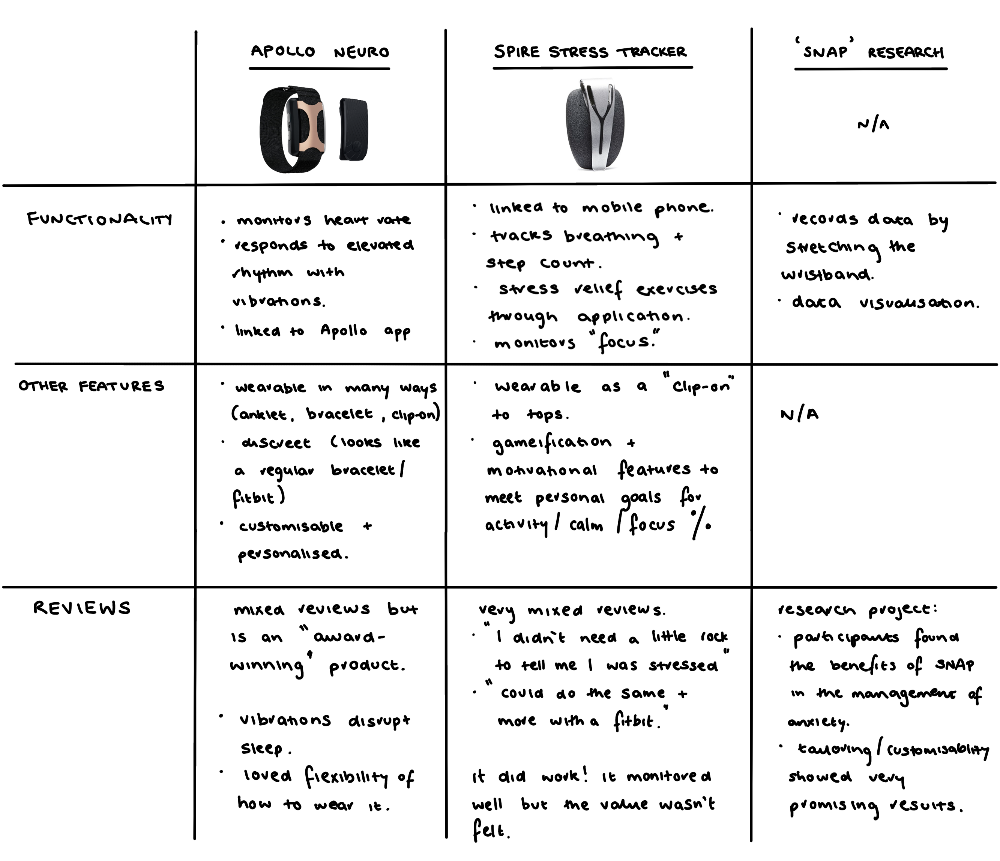
Desk Research
Wearable Technology for Mental Health
Mental health disorders affect millions of people worldwide, and there is growing recognition that traditional mental health assessments have various limitations as they rely on subjective methods such as clinical interviews and self-reporting. Capturing data through wearable devices and smartphones can enable objective, continuous and non-invasive mental health monitoring (Shen et al., 2025).
Many researchers have examined the technical capabilities of wearable devices and their relevance to m ental health. Key biometric data captured by these devices include heart rate variability (HRV), electrodermal activity (EDA), sleep patterns, and physical activity; each offering a window into a person's physiological and psychological state. Previous research has shown that a low HRV can be related to stress and mental illness, with reductions potentially indicative of declining mental health and increases suggestive of recovery or resilience (Debard et al., 2020). When machine learning is applied to this collected data, more promising results emerge, with some studies reporting accuracies exceeding 92% in anxiety detection (Shen et al., 2025).
The user experience and usability of wearable health devices play a key role in determining user acceptance (Vaal, 2019), and yet research addressing current design challenges and prolonged usage of wearables remains scarce (Hu et al., 2024). In the UK, more than half of adults (54%) report not using any wearable technology (YouGov, 2025). Notably, advanced stress and mental health tracking was a desired feature for wearable technology, with 28% of UK adults expressing this viewpoint. This suggested that while interest exists, it remains limited with users highlighting concerns surrounding data privacy, poor device design and a lack of actionable feedback (YouGov, 2025; Robinson et al., 2023).
Anxiety, Coping Strategies and CBT
Online cognitive behavioural therapy (CBT) has emerged as a credible and scalable alternative to traditional face-to-face treatment for mental health. This is often low intensity and helps overcome the barriers to regular CBT, like limited follow-up between appointments or after treatment has concluded (Onyeka et al., 2024).
The integration of wearable biofeedback with app-based CBT interventions represents a promising ideology. Heart-rate variability biofeedback wearables, used alongside CBT-based stress management coaching, have demonstrated feasibility in reducing anxiety symptoms, with participants completing guided breathing exercises prompted by real-time physiological data (Chung et al., 2021). Similarly, smartphone-based interventions combining CBT principles with heart-rate biofeedback have shown effectiveness in reducing perceived stress. Wearable devices that monitor pulse, sleep, and physical activity have been linked to significantly greater reductions in anxiety compared to control conditions (Fuhrmann et al., 2025). Wearable technologies possess the technical capabilities to monitor real-time symptoms of mental illness, which opens up the possibility of responsive applications that can deliver CBT-informed coping strategies at precise, meaningful moments (Hirten et al., 2024).
User Needs Research
Methodology
To ground these desk-research findings in applicable target market research, a questionnaire will be distributed to understand the public's experiences with anxiety and explore how wearable technology could better support them. All responses will be confidential and anonymous.
Participants were recruited online and on campus, but never face-to-face or one-on-one, to avoid participants' identities from being known. These fliers and advertisements were published in university spaces (Discord, campus pinboards), as university students statistically are at a higher risk of anxiety and stress-related disorders (UCL, 2023; Lee et al., 2021), although some participants were recruited through non-university Discord servers. 14 total participants took part in the survey.
The questionnaire was split into five main categories: current usage & attitudes, detection & monitoring, real-time intervention, reflection & journalling, and design preferences.
Key Survey Findings
Guided breathing exercises were the most preferred intervention (79%), followed by grounding techniques (64%). Users consistently emphasised the importance of personalisation and control — they wanted to choose whether and how they received support, not have it imposed on them.
"If my watch notified me asking how I was feeling in that moment, I would be more willing to respond in the heat of the moment with just a simple 'I'm good', 'I'm not okay' choice."
"… where I can choose if I want help or not."
Participants also showed near-unanimous appetite for reflection tools — all 14 found reviewing stress patterns over time at least "somewhat valuable", with 64% rating it "extremely valuable". For the wearable form factor, 71% preferred a smartwatch style, and 79% said it was extremely important that the device resembles a standard everyday item rather than a medical one.
User Requirements
MoSCoW Analysis
Based on the data analysis, a lot of user requirements were found for the wearable system. These were split into functional and non-functional requirements, and prioritised using the MoSCoW method: must-have, should-have, could-have and will not have, to ensure that the team aligns on priorities and that critical features are delivered first and foremost (Vijayakumar et al., 2024).
Must Have
- The system must be able to detect anxiety and stress using biometric signals such as heart rate and breathing patterns.
- The system must protect user privacy and keep personal data safe.
Should Have
- The system should send out subtle notifications and vibrations when stress is identified because most users prefer the sort of non-intrusive alerts.
- The system should provide real-time support, especially guided breathing exercises and grounding techniques, as the user preferred this the most; ideation should consider the option to toggle this on and off, though.
- The system should allow users to customise their experiences, such as the sort of notifications they receive and the types of interventions they want.
- The system should provide users with their stress levels over time clearly and visually.
- The system should be simple and easy to use.
- The wearable device should look like an everyday device, not a medical device. This could be in the form of a watch or something more versatile.
- The system should be accurate and reliable when detecting stress.
Could Have
- The system could include an option to contact a trusted person in times of high stress.
Will Not Have
- The system will not disturb users too much (especially during sleep or busy periods) and will not feel intrusive.
- The system will not involve any artificial intelligence or LLMs, as this introduces more friction and trust barriers surrounding personal data.
User Persona
The creation of user personas is remarked as a necessary part of the UX design process. They are a tool that designers can use to generalise the user base and provide a quick reference to key user preferences and requirements throughout the design process (Harley, 2025; Rogers, 2019). Below is the user persona created for this project.
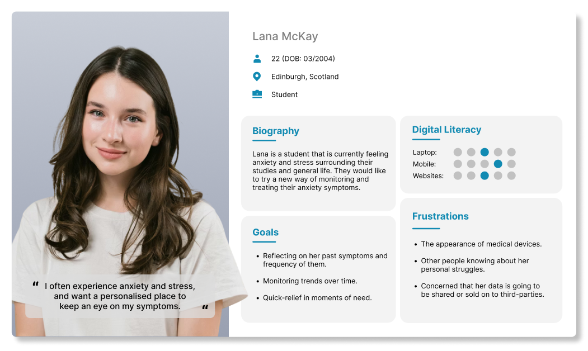
Initial Ideation
Wireframing
Wireframing was chosen as the method of ideation for the application screens due to its low-commitment way to explore and communicate ideas. They emphasise layout and functionality without the distraction of visual design elements, and allow for iterations; valuable in the early stages of a project (Chen & Yoon, 2024).
Wireframing was chosen as the ideation method for its low-commitment way of exploring layout and functionality without the distraction of visual design. Key screens included a data protection agreement on first launch (directly addressing the privacy concerns raised in research), a home screen with a stress activity chart and quick action buttons, a profile and settings page, a reflection and journalling page, and a guided breathing exercise screen.
A key design decision on the breathing screen was the use of an expanding and contracting circle — as the user inhales, the circle fills its outer boundary, and shrinks back on exhale. This draws on the principle of visual metaphor, mapping an abstract interaction onto something physically familiar, so users immediately grasp the intended behaviour.
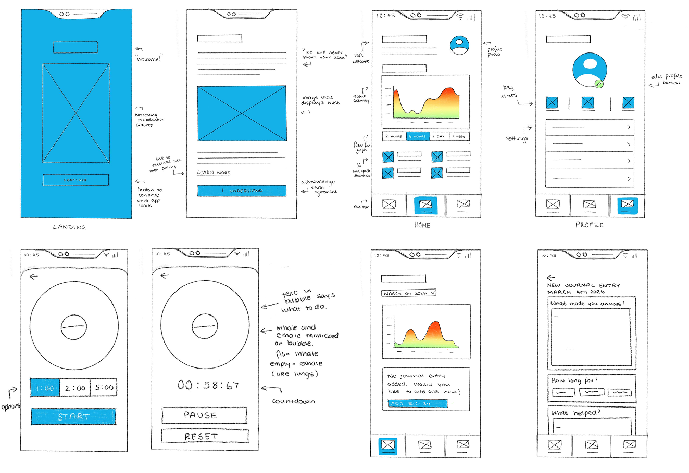
Paper Prototyping
Paper prototyping allows for quick, cheap, and simple production and iteration of concepts. Their low-fidelity nature actively encourages experimentation, as the team feel free to scrap and revise ideas without the psychological barrier of “wasting” polished work.
Paper prototypes hold up surprisingly well against other early-stage methods, such as digital wireframes or more polished Figma user flows. Users are often equally willing to participate with paper-based interfaces and provide honest, actionable feedback, partly because the rough aesthetic signals that the design is unfinished and their input matters (Gordon, 2021). It also allows users to perhaps make their own changes in a participatory design fashion (Osman et al., 2009).
For this part of the project, I worked with Chu Htet to produce the paper prototypes, and to later test them.
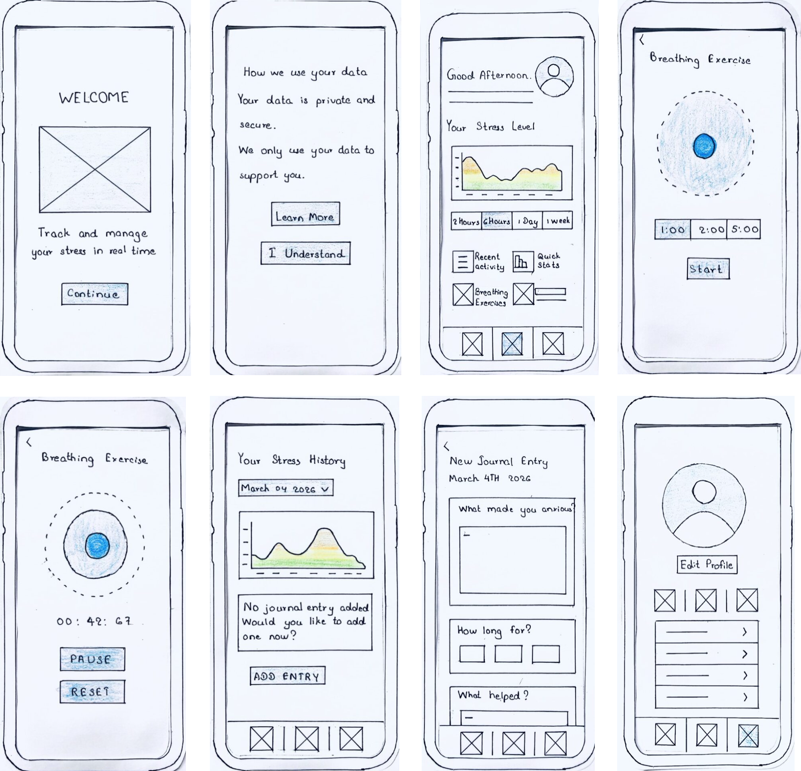
Wearable Sketches
Four main prototype ideas were developed. Option 1 is a bracelet-style wearable with a central "bead" housing the sensors, suitable for wear on the wrist or ankle. Option 2 follows a standard smartwatch form, proven ideal for biometric sensing and familiar in daily life. Option 3 is the most versatile, wearable on wrists or ankles with a gender-neutral aesthetic. Option 4 resembles a regular analogue watch, the most discreet option, with a wide surface area for skin contact sensors.
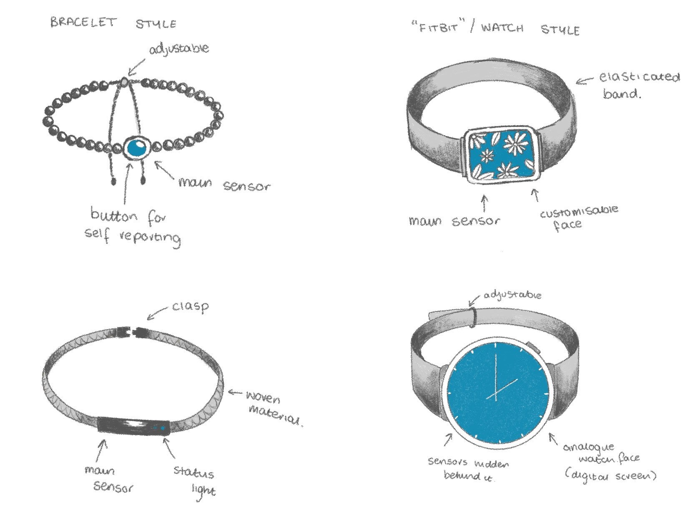
Preliminary Testing
Methodology
Preliminary usability testing was conducted using a low-fidelity paper prototype. Early-stage testing is useful because it allows designers to identify usability issues before developing a more complex and high-fidelity prototype, which saves time and resources (Gordon, 2021).
During the testing, a task-based observation method was used. Through this, usability can be reviewed for tasks such as navigating the home screen, starting a breathing exercise, and viewing their stress history by using this system. These were based on the key user goals and features identified in the earlier user requirements. Task-based testing is very useful for identifying usability problems and understanding how users naturally interact with an interface (McCloskey, 2014; Shah & White, 2021).
A think-aloud method was used during the session. Participants were asked to speak about what they were thinking and describe what they thought each screen and feature was for. The think-aloud method helped to understand how simple the user interface was and how easy it was to understand without any reason (Nielsen, 2012).
When the tasks were done, a few short questions were asked to participants to get feedback on usability, clarity and overall experience. This leads to a mixed-methods approach with observation (what users do) and interviews (what users say). This is important since the way users behave and the way they think may not always match (Fouche, 2025); thus, using both techniques gives a more complete understanding of usability.
Participants and Sampling
A total of four participants took part in the preliminary testing. All participants were university students, which is in line with the target users specified in the earlier research, where university students are more likely to suffer from stress or anxiety. Participants were selected via convenience sampling when they were easy to contact and willing to take part. This method is often used in early usability testing, where the main goal is to quickly identify the usability problems using the general population (Golzar et al., 2022).
Results
All participants successfully identified the stress level graph and understood the breathing exercise feature intuitively. The layout was described as simple and easy to navigate. However, feedback on the journalling feature was divided, some participants enjoyed logging emotions while others preferred multiple-choice inputs over free text. This directly informed changes made in the high-fidelity prototype.
Implementation
Style Guide
A style guide was developed before moving into high-fidelity work, establishing consistency in typography, colour, spacing, and component design across the application. This also ensured maintainability and effective collaboration between team members throughout implementation.
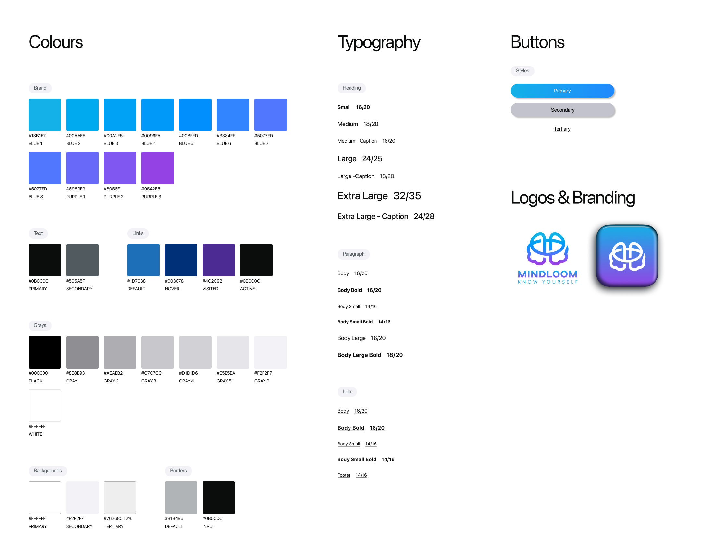
High-Fidelity Prototype (Figma)
High-fidelity screens were built in Figma, incorporating changes from preliminary testing. Journal entry inputs were updated away from plain text boxes to include simple button inputs, directly responding to participant feedback. On the profile page, customisable settings were brought to the surface rather than buried in sub-menus, reducing the navigation burden for users.
Physical Wearable Prototype
A non-functional 3D prototype of the wearable was produced to evaluate aesthetics, scale, and ergonomic feel — dimensions that digital wireframes alone cannot fully address. The physical prototype allowed participants to wear and interact with the device during evaluation, providing data that would have been impossible to gather from screen-based methods.
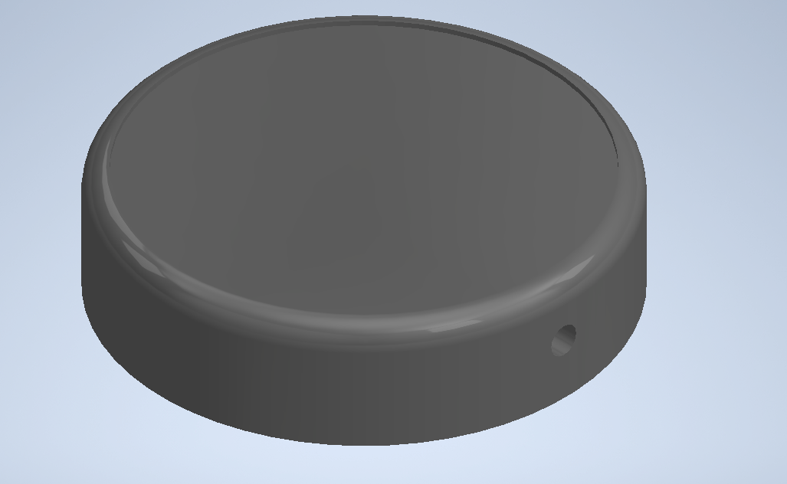
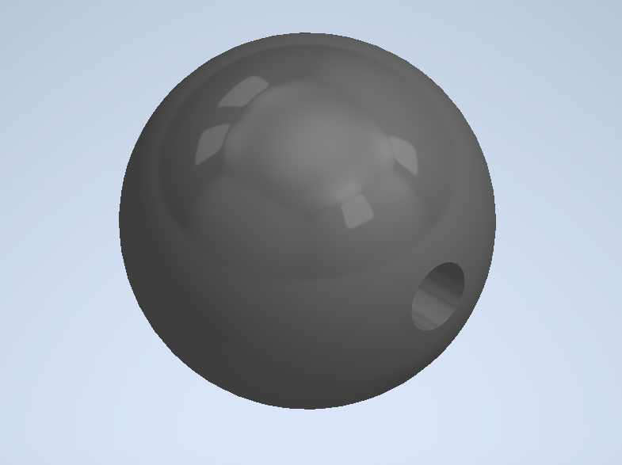
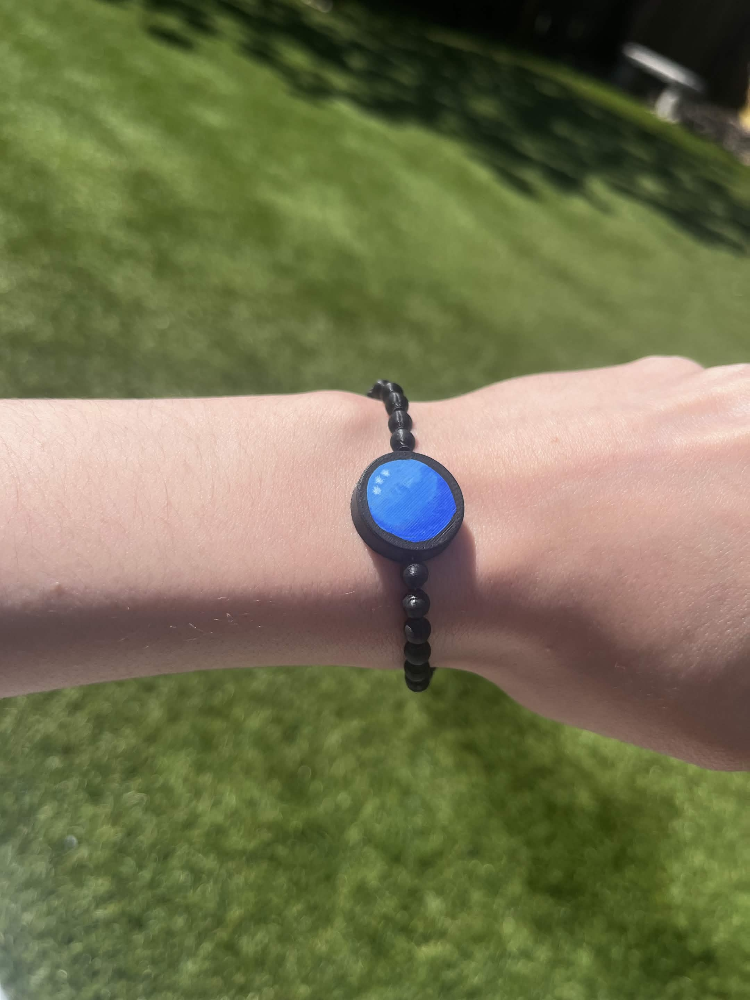
Summative Testing
Methodology
For the first round of testing with the implemented prototype, a heuristic evaluation was chosen as the most effective methodology. Heuristic evaluations are a highly effective usability testing method that should be conducted before involving real users in any testing process. They involve a small group of expert evaluators who independently examine an interface and judge its compliance against recognised usability principles (heuristics) such as Nielsen’s ten usability heuristics (Nielsen, 1994). This method is particularly valuable in the early stages of prototype design as they are quick to execute and does not require the recruitment or scheduling of real participants (Moran & Gordon, 2023).
Research has shown that expert evaluators can identify up to 80% of usability issues within a system (Philips, 2023), making it a remarkably efficient way to surface problems early. By catching and resolving these issues before user testing begins, teams can ensure that real participants are exposed to a more refined experience.
The participants of this particular methodology were members of our own project team, alongside an external evaluator to aid in mitigating bias (Stedry, 2021).
Results
Visibility of system status — The breathing screen gave no indication of the current phase (inhale, hold, exhale) before or during use, and the home screen graph lacked axis labels, leaving users to guess what the data represented.
User control and freedom — There was no way to edit or delete journal entries once submitted, limiting users' ability to correct mistakes.
Error prevention — Journal entries could be submitted completely blank, with no disabled state or confirmation prompt to catch accidental saves.
Flexibility and efficiency — Quick action buttons (Breathe, Sounds, Grounding) were fixed with no way to customise them, limiting the app's adaptability to individual user preferences.
Help and documentation — Beyond the privacy consent screen, there was no onboarding flow or in-app guidance to orient new users to the app's features.
Strengths — Participants unanimously agreed the language is clear and friendly, the breathing animation maps naturally to real-world breathing, and the design is calm, uncluttered, and purposeful.
Final Changes
Whilst the results from the heuristic evaluation yielded a plethora of recommendations to add to the website to improve usability, due to project timescales, some are not possible within this iteration; however, in future iterations, these would be implemented before deployment.
Text labels were added to the breathing exercise to indicate current phase, and axis labels were added to all charts. A customisable quick actions menu was introduced on the profile page, allowing users to select their preferred interventions. Button sizes were standardised across the application for visual consistency. A confirmation overlay was added on journal submission to prevent accidental empty saves, directly addressing Nielsen's fifth heuristic, Error Prevention.
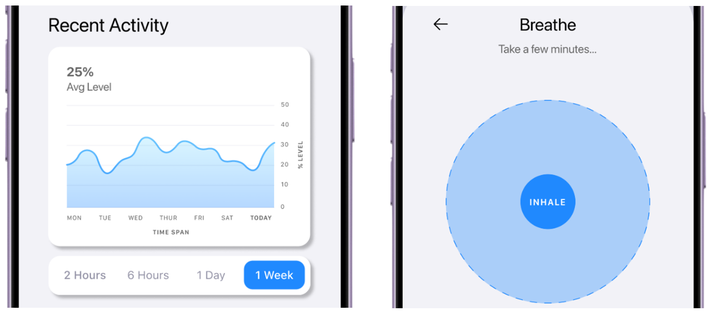
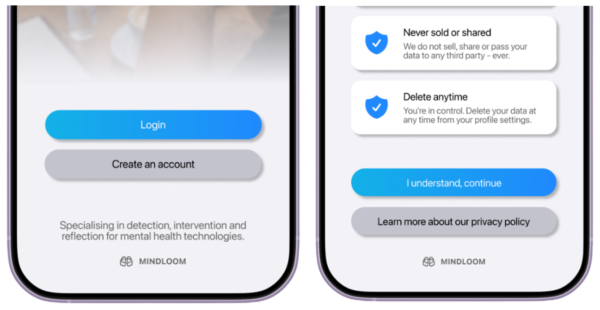
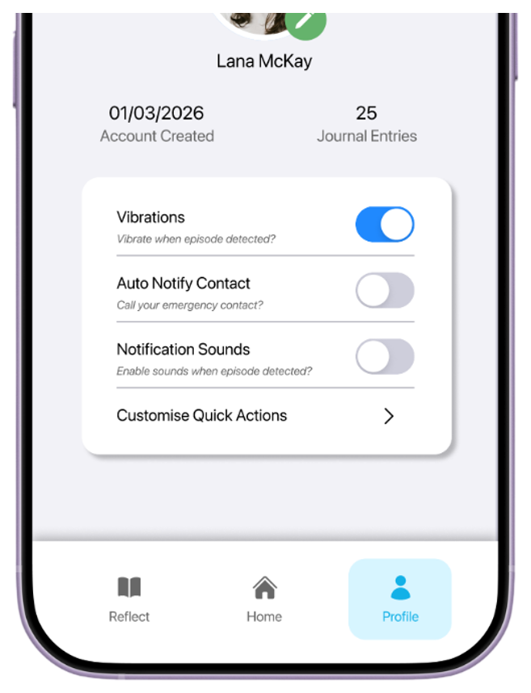
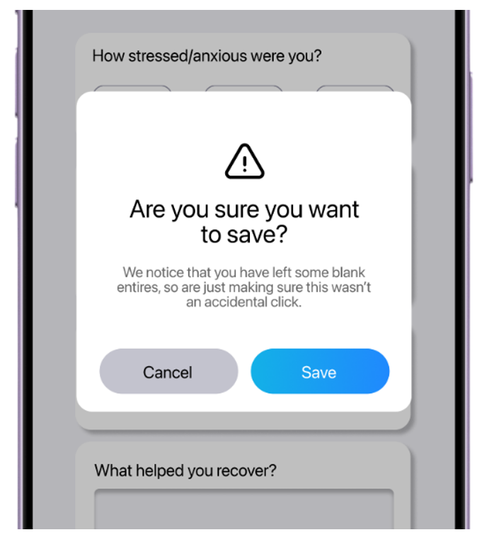
Evaluation
Methodology
For this final stage of evaluation, users were again involved, and the interface was measured against the initial requirements to ensure that these were met in the eyes of the users. Scenario-based evaluation was utilised as it allows the assessment of user interaction within realistic usage contexts (Rosson & Carroll, 2002). The scenario given to the participants looked like the following:
“You will be interacting with a wearable device (this bracelet) and a linked mobile application designed to support awareness and management of stress and anxiety. The system monitors physiological signals such as heart rate and breathing patterns, and may provide subtle, real-time feedback through the device or provide intervention strategies in the app. It also records this information and presents it within the app to help you reflect on patterns over time”.
The wearable of the project was evaluated using participant interviews, where they would have the opportunity to wear and “play around with” the prototype. This would supply us with data surrounding ergonomics, scale, and visual aesthetics; dimensions of the user experience that are difficult to capture through screen-based methods alone.
Participants and Sampling
The participants in this study were of varied genders, to account for the aesthetic preferences of jewellery: 3 participants were male, and 2 were female. All participants were again recruited via convenience sampling, which is noted as a potential limitation of this evaluation, as this is not returning to the target market. In future evaluations, it would be advised to use purposeful sampling.
Application — Observation Themes
Data Visualisation: Multiple participants requested finer or customisable time ranges for the activity graph. The current filters were perceived as too broad to surface meaningful patterns. Several participants also expressed interest in location-based data to contextualise when and where anxiety spikes occurred.
Breathing Exercise: One participant raised an important accessibility concern — a visual-only breathing guide is a barrier for users who benefit from eyes-closed practice or who have visual impairments. A multimodal approach, giving users the option to enable haptic or audio feedback, was recommended.
Trust & Privacy: The privacy agreement on first launch was strongly appreciated by data-conscious participants. One minor wording change was suggested — replacing "I understand" with "Continue" on the trust page, as the former implied a trade-off.
"The trust agreement is the most important part, I like it."
"I would love the option to customise this, especially if it was on a day-to-day basis, as my sensory issues do come and go with different materials."
Wearable — Interview Themes
Aesthetic and Gender Identity: Responses were mixed — one participant felt the design skewed feminine while another positively associated it with a culturally desirable aesthetic. Crucially, no participant perceived it as medical, which was a core requirement.
Sensory Comfort: Participant preferences around strap width and texture were contradictory, with some preferring the beaded design and others finding it uncomfortable. This reinforced the need for modularity.
Customisation and Modularity: A consistent theme across participants was a desire for interchangeable components — different band materials, widths, and styles — to accommodate varying sensory preferences and daily contexts. A modular design was recommended for future iterations.
Conclusions
The results indicate that whilst both the application and wearable were broadly well received, users consistently desired greater personalisation and control. Key improvements include more flexible data visualisation, multimodal breathing guidance, and a modular wearable design to accommodate varying sensory and aesthetic preferences.
The final prototypes do meet the initial requirements defined during the research phase of the project; results suggest that improvements can be made primarily to the customisation (users want more), visualisation of data and accessibility of the breathing guidance.